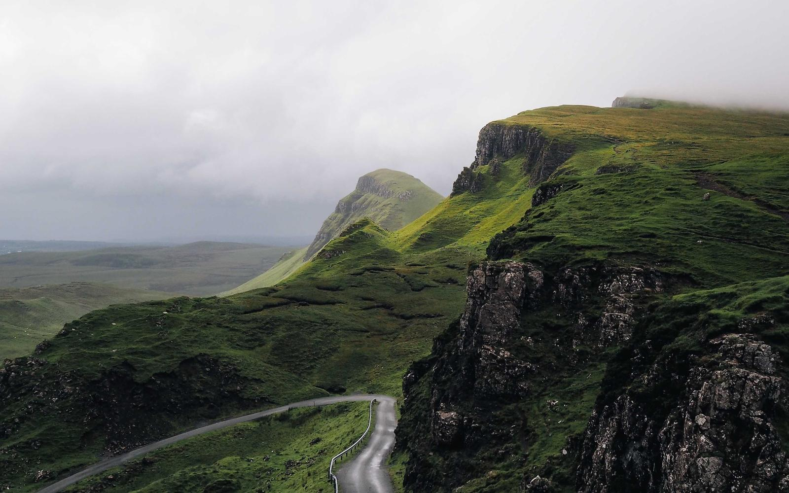

Zoom and pan缩放和拖动
Scroll to zoom, drag to move, double-click for 1:1.滚轮缩放，按住拖动，双击切到 1:1。
Most images on the web are shown smaller than they are. Click one and Closer opens it full size, right on the page. Icons, avatars and linked images are left alone. 网页上的图片大多被缩小了。点一下，Closer 就在当前页面打开原图。图标、头像和带链接的图，它不会碰。

What opens打开哪些图
A page can have dozens of images. Most of them aren't meant to be opened. 一个页面上可能有几十张图，大部分并不需要放大看。
When it isn't sure, it does nothing. You can still right-click an image it skipped. 拿不准的时候它就不打开。漏掉的图，右键仍然可以照常打开。
The viewer查看器
No new tab. Press Esc and you're back where you were, at the same scroll position. 不开新标签页。按 Esc 关闭，还停在原来看到的位置。
Scroll to zoom, drag to move, double-click for 1:1.滚轮缩放，按住拖动，双击切到 1:1。
Real size, displayed size, format and file size.原始尺寸、显示尺寸、格式和文件大小。
Copy the image, or save the original file.复制图片，或者保存原文件。
Dark, light, or a checkerboard for transparent images.深色、浅色，以及看透明图用的棋盘格。
Shortcuts快捷键 Escclose关闭 ·Iinfo信息 ⌘/Ctrl Ccopy复制 ⌘/Ctrl Ssave保存 01fit / 1:1适应窗口 / 1:1 +−zoom缩放 RFrotate / flip旋转 / 镜像 Bbackdrop背景
Privacy隐私
Closer needs access to every site you visit, so here is what it does with it. Closer 需要在你访问的所有网站上运行，所以把它做什么说清楚。
No analytics, no crash reports, no account, no server.没有数据统计，没有崩溃上报，没有账号，也没有服务器。
It fetches the image you opened to read its file size. Nothing else.为了显示文件大小，它会读取你打开的那张图，不请求别的东西。
Only the image you click. Not the text, forms, history or cookies.只看你点的那张图，不读正文、表单、浏览记录和 Cookie。
After installing, it waits for your OK. You can take it back any time.装好后要你点一下授权才会生效，随时可以撤销。
Install安装
It isn't on the Chrome Web Store yet, so for now you load it from the source. 还没上架 Chrome 应用商店，目前需要从源码加载。
chrome://extensions and turn on Developer mode.
打开 chrome://extensions，开启右上角的「开发者模式」。
Requires Chrome 110 or later.需要 Chrome 110 或更高版本。
Run a website? Add data-closer-ignore to an image or its container and Closer won't open it.
做网站的话：给图片或它的外层元素加上 data-closer-ignore，Closer 就不会打开它。